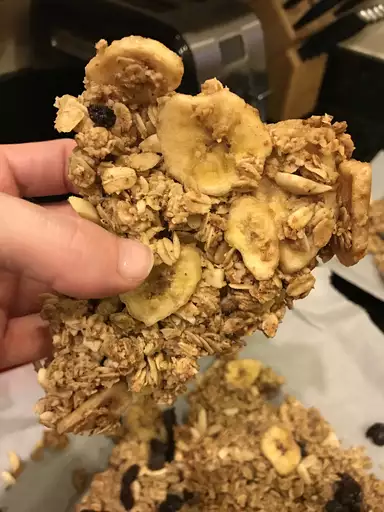

Cereal

Description
Simple homemade cereal made with granola
Ingredients
-
7 cups quick-cooking oats
-
1 cup wheat germ
-
1 cup wheat bran
-
½ cup brown sugar
-
½ cup vegetable oil
-
½ cup honey
-
½ cup water
-
1 tablespoon vanilla extract
-
1 teaspoon salt
-
1 cup chopped dates
-
1 cup chopped pecans
Steps
-
Preheat the oven to 275 degrees F (135 degrees C).
-
Mix oats, wheat germ, and wheat bran together in a large bowl.
-
Stir brown sugar, vegetable oil, honey, and water together in another bowl until blended. Mix in vanilla, cinnamon, nutmeg, and salt. Pour brown sugar mixture into oat mixture and stir until evenly moist. Transfer to a large, shallow baking dish.
-
Bake in the preheated oven, stirring every 15 minutes, until lightly browned, about 45 minutes. Add dates, pecans, and coconut to the baking dish and stir to combine. Continue to bake for about 15 more minutes. Remove from the oven and cool to room temperature.